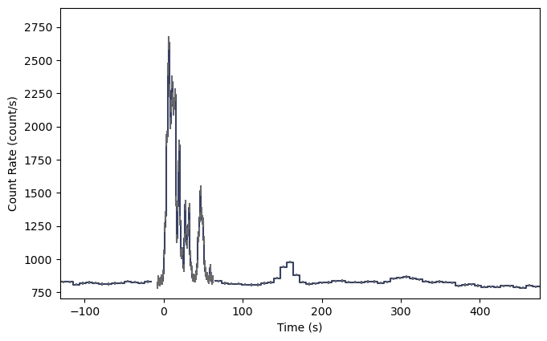
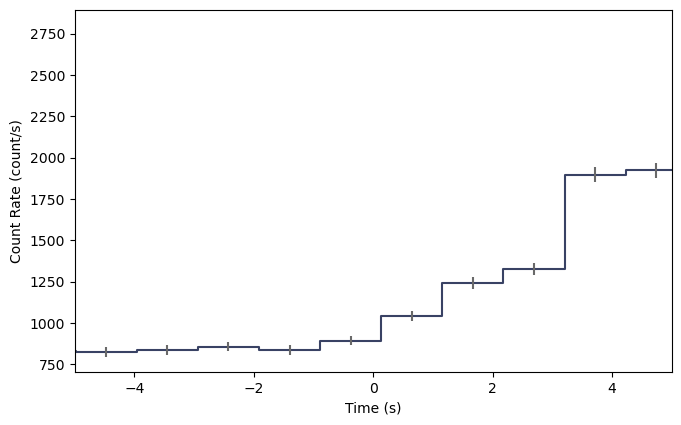
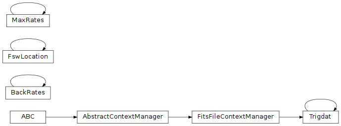

GIFTS Trigger Data (gdt.missions.gifts.trigdat)¶
Note
The GIFTS trigger data implementation and this document are currently based on those provided by the Fermi Gamma-ray Data Tools, and will be revised in future versions.
TRIGDAT was designed so that it contains the minimum amount of data required
for rapid on-ground characterization and localization of triggers. To that
purpose, the TRGIDAT contains 8-channel pre-binned lightcurve data for each of
the six detectors along with spacecraft position and attitude information for
each bin. The lightcurve data, though, has multiple resolutions. There are
“background” time bins of duration 8.124 s from the start of the trigger data
to just before trigger time, and then about 50 s after the trigger time through
the rest of the data. In between the two segments of “background” bins, there
are 1.024 s duration bins, and in a very short window around the trigger time,
there are overlapping bins of width 256 and 64 ms. This design enables a
preliminary rapid analysis for long duration triggers that can last from
several tens of seconds down sub-second duration triggers. The fact that the
different bin timescales are overlapping creates difficulty if you want to
make lightcurve plots, but the Trigdat class solves this problem for you.
Let’s open a TRIGDAT file:
>>> from gdt.missions.gifts.trigdat import Trigdat
>>> trigdat = Trigdat.open("gifts/gifts_trigdat_all_bn220624124_v01.fit")
>>> trigdat
<Trigdat: gifts_trigdat_all_bn220624124_v01.fit;
trigtime=677732319.51; triggered detectors=['G2', 'G3']>
Alternatively, the TRIGDAT can be retrieved from the current GIFTS burst catalog:
>>> from gdt.missions.gifts.catalogs import BurstCatalog
>>> burstcat = BurstCatalog()
>>> trigdat = burstcat.get_trigdat(trigger_name="bn220624124")
Metadata and extensions related to how the trigger was processed onboard the spacecraft are provided, including the trigger timescale and rates in each detector, the simple background rates that are used onboard the spacecraft, and the onboard trigger classification and localization information. These are accessible through the Trigdat attributes and methods. Regarding the extensions:
>>> trigdat.headers.keys()
['PRIMARY', 'TRIGRATE', 'BCKRATES', 'OB_CALC', 'MAXRATES', 'EVNTRATE']
The pertinent data we want to use is in the ‘EVNTRATE’ extension. Since this contains the 8-channel lightcurve for each of the detectors, we can extract the data for a detector and return it as PHAII object:
>>> phaii = trigdat.to_phaii('G0')
>>> phaii
<GiftsPhaii:
trigger time: 677732319.512006;
time range (-130.9400000257492, 475.28061604499817);
energy range (3.4, 2000.0)>
Once extracted, it has the full capabilities of the GiftsPhaii class. We can
also retrieve the sum of the detectors:
>>> # the triggered detectors
>>> trig_dets = trigdat.triggered_detectors
>>> trig_dets
['G2', 'G3']
>>> summed_phaii = trigdat.sum_detectors(trig_dets)
>>> summed_phaii
<GiftsPhaii:
trigger time: 677732319.512006;
time range (-130.9400000257492, 475.28061604499817);
energy range (3.4, 2000.0)>
>>> summed_phaii.detector
'G2+G3'
And then we can plot the lightcurve using the Lightcurve class (see
Plotting Lightcurves for more info):
>>> import matplotlib.pyplot as plt
>>> from gdt.plot.lightcurve import Lightcurve
>>> lcplot = Lightcurve(summed_phaii.to_lightcurve())
>>> plt.show()

The plot shows where the 8 s timescale changes to the 1 s timescale and then
back to the 8 s timescale. By default, we retrieve the 8-s and 1-s data for the
lightcurve, where other timescales may be retrieved
by providing a timescale to to_phaii() or sum_detectors():
>>> # retrieve all timescales 64 ms up to 8 s
>>> # possible options for timescale is 64, 256, or 1024
>>> summed_phaii = trigdat.sum_detectors(trig_dets, timescale=64)
>>> lcplot = Lightcurve(data=summed_phaii.to_lightcurve())
>>> lcplot.xlim = (-5.0, 5.0)

All timescales are now plotted and merged into a single lightcurve. The 64 ms option will return all timescales at >= 64 ms, while the 256 ms option will return all timescales >= 256 ms. This lightcurve doesn’t look particularly pretty because it’s a long-duration GRB, but short GRBs show up very nicely on the 64 and 256 ms timescales.
Reference/API¶
gdt.missions.gifts.trigdat Module¶
Classes¶
|
Class for the GIFTS Trigger Data |
|
GIFTS MAXRATES and TRIGRATE data in Trigdat. |
GIFTS background rates data in Trigdat. |
|
Class Inheritance Diagram¶
